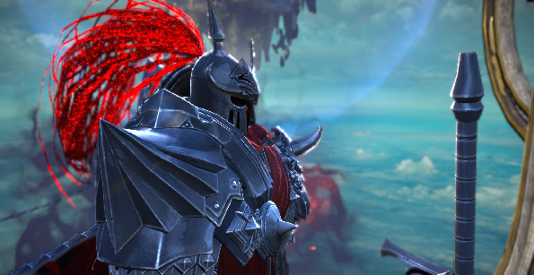
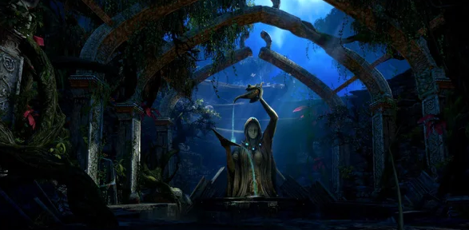

Tenacity / Theorycrafting & Lore / Tera Lore
Chapter One- Age of Creation
01- Arun and Shara
In the beginning of time, above the vast open universe, lived Arun and Shara.
There was an endless battle between light and darkness.The fight just went on and on for no apparent reason.Two beings, tired of this battle, wished to break away from their camps and escape to another dimension.
They decided to leave the chaotic world that they knew, and created a space which they can call their own and barriers were put in place to shield off this newly created space from the chaos outside that both Arun and Shara called home.
02- Creation of Arborea
Arun and Shara named this peaceful space: Arborea.
Pathways were also built along the barriers surrounding Arborea, these pathways were guarded by Mystel, hence they are also known as: “Mystel’s Path”.
Two continents were formed during the creation of Arborea, and took on the names of their creator: Arun and Shara.
A sun was created to provide a thriving environment for all kinds of life-forms to flourish. The breath from Arun and Shara became the life-force of all living creatures.
From the heart of each titan came a spring that became the Fountain of Shara and Fountain of Arun. These fountains are the rawest source of primal power in their new world.

03- Birth of the first “god”, Manahan
Manahan is the eldest son and only son of Arun and Shara. As he grew up alone, he began to wonder about the outside of this world.
Arun and Shara asked him not to go to the end of the world like that, but in the end he ignored them and secretly went to the end of the world.
And there was a huge door.
Manahan puts his hand on the door and seen a crack, and then a black space visible beyond the door.
Beyond that, there was something that Manahan had never seen before, and in that moment Manahan tried to reach out to it.
Arun and Shara found out the location of Manahan and came in haste.
Arun and Shara pierced the rift in the world that Manahan opened, and then punished Manahan that he has to be confined in the rift space that leads to another dimension beyond the end of our world that Manahan wanted so much to go to.
Manahan cursed Arun and Shara as he gets trapped in the rift.
Having locked up their first child, Manahan, Arun and Shara fell into a long sleep but before they go to sleep, they make other gods instead of Manahan.
04- Birth of the next 31 gods
Manahan is very powerful and has an unquenchable sense of curiosity, and perhaps might one day threaten the safety of Arborea.
Therefore Arun and Shara used parts of Arborea to create the next 11 gods:
● Karas
● Sikander
● Zuras
● Gidd
● Saleron
● Isren
● Glumo
● Tithus
● Amarun
● Dagon
● Elinu
Later, Arun and Shara used parts of the gods above, including Manahan himself, and created another 20 gods:
● Balder
● Oryin
● Lok
● Zenobia
● Yurian
● Kaia
● Shakan
● Velik
● Ishara
● Yaeryn
● Thulsa
● Bahaar
● Seren
● Killian
● Lakan
● Arachne
● Akasha
● Herate
● Dakos
● Icaruna
These 31 gods called themselves the children of the ancient gods: Arun, and Shara.
One day after a very long time,an existence whose origin is unknown appears in Tera's world. She later became the guardian deity of the human city of Velika.She was called the goddess Velik.
When everyone fell asleep, even the other children, gods created by Arun and Shara, start shaping the world to their imagination.
The other gods, the children of Arun and Shara, were doing well, but they were fighting for supremacy.The god of the sun Balder dies to his younger brother as Lok gets sealed away for what he has done.

05- First creation of Manahan
Having watched his parents at work, the curious Manahan tried to create something himself. As a result, Shandra Manaya was born.
However at his young age, Manahan was still unskilled in the art of creation, and could only mimic what his parents did, therefore Shandra Manaya turned out as an incomplete being.
She existed neither as a god nor the beginning of a thriving race.
06- Manahan’s curiosity; Arborea shattered
There was this one argon who got interested in sun. He flew towards it and messed with it so it became unstable. Manahan caught the lost argon and fixed the damaged sun (but imperfectly - thus created day&night).
As a growing youth, Manahan always wondered what existed outside the barrier surrounding Arborea. Driven by his ever growing curiosity, he broke through a part of the barrier which surrounded and protected Arborea.
Due to his actions, Arborea itself shattered into several pieces. In this exact instance, another strange and unfamiliar space was simultaneously formed, later known simply as: “Yakaia”.
07- Manahan in exile
Manahan’s reckless action brought upon an unimaginable danger to Arborea.
Realising Manahan can no longer be allowed to do things at his whim, Arun and Shara banished and imprisoned him into Yakaia. Manahan’s powers were then used to stabilise fractured Arborea.
While the other Gods knew of his creation and existence, he became someone no longer spoken of. His existence would never become known to the mortal races, and so he became merely an "ancient name best forgotten."
08- Repairing of the barrier
Arun and Shara repaired the damage done by Manahan to the barrier protecting Arborea, and eradicated the chaotic energies that had seeped through.
Arun and Shara were aware of the fact that the powers possessed by the other 31 gods, could bring about peace and prosperity to Arborea, but could also bring about catastrophic calamity to it.
Arun and Shara also agreed that no god can be the supreme ruler of Arborea, as this will one day threaten the its stability.
A stone tablet, “Arucana Kenaia” was created, containing the memories of Arun and Shara.
09- The 33rd god; Mystel’s birth
Lastly, Arun and Shara created Mystel. Her existence differed from the others, as she existed to look after Arborea instead of Arun and Shara.
10- Creation of the different races
Six of the wisest gods deciphered the knowledge in the “Arucana Kenaia”, and created the six main races.
● Karas deciphered the tablet first and created the Elves(I know they are known as the “High Elves”, there will be an explanation for this later).
● Zuras created the Devas(later known as the Castanics, also will be an explanation of this later).
● Amarun created the Amans.
● Tithus created the Giants(the main race which the Barakas belong to).
● Gidd created the Humans.
● Elinu created the Poporis and Elins. She created them in her own image by severing a piece of her soul and essence.
Arun and Shara were both very satisfied with the newly created races.
11- Arun and Shara’s rest
Arun and Shara knew the gods will eventually involve themselves in the lives of the living-beings in Arborea.
Therefore, they handed “Gidd’s Spear”(a weapon capable of killing and absorbing the powers of a god) to Gidd, who was known to be both wise and justiful.
Understanding the will of Arun and Shara, Gidd vowed to protect Arborea.
After Arun and Shara created a mysterious temple, they decided it is time for a rest, and both fell into a deep slumber.
Chapter Two- Age of Divinity
01- Creation of the different races continued
The six wisest gods led their creations and settled in different parts of Arborea.
As time went by, other gods started to create their own races:
● Sikander created the Sikandaris
● Saleron created the Prions
● Dagon created the Yuantis.
● Glumo created the Vampirs and the Gulas.
● Yaeryn created the Jaris.
However these gods did not completely understand the knowledge within "Arucana Kenaia", as such, "something" is still lacking in their creations when compared to the original six races.
The gods, along with the races they created moved to, and starting to populate different areas within Arborea.
02- Birth of the Fairies
Isren used the power of nature and the breath from the Ancient Gods to create the Fairies and Elementals.
Since their "creation" process differed from other races, Fairies and Elementals differed in their characteristics as well.
03- Gathering of the Gods
As time progressed, some gods lived amongst the different races, and some began to explore different parts of Arborea.
One day, Mystel went and searched for all the gods, and asked them to congregate at the location where "Arucana Kenaia" was located.
This is the first gathering of the gods, after Arun and Shara went into slumber. They all shared their knowledge and experience, recording them all onto "Arucana Kenaia", this gathering lasted for 10 years.
After this gathering, the gods maintained a bond amongst each other, hence the different races got to learn about the existence of other gods as well, thus the beginning of multiple beliefs within the races.
04- Flower of Life: Last gift from Karas to the Elves
Known to be the wisest of the gods; Karas questioned the arrangement of Arun and Shara.
After teaching the Elves the usage of magic, and giving them the "Flower of Life", Karas silently left.
The Elves missed Karas, but they also remembered Karas telling them that he will never return, therefore the Elves started looking for a way to live on their own.
05- City of the Giants
Tithus bestowed the knowledge of construction to the Giants.
Tithus admired the other races living in Arborea, in the same time wishing that the Giants would one day be the true ruler of the land.
Tithus began thinking of ways to make this happen.
06- Isren's Death
An incident caused Isren her death, now the other gods realise that they one day too, will die.
07- Sealing of the Sacred Lake
After Isren's death, in an attempt to protect the Elins and Poporis, Elinu sealed the Sacred Lake within a barrier. Since Elinu is an expert in the art of concealment, no one knew about the Sacred Lake until the the barrier's removal.
Because of her foresight, the Poporis and Elins lived together blissfully and joyfully through the Divine Wars.
However, after sealing the Sacred Lake in a barrier, Elinu removed all her traces and disappeared.
08- Sikander's rampage
Madly in love with Isren, Sikander went into a rampage searching for the truth about her death.
Tithus tried to borrow Gidd's Spear in an attempt to calm Sikander down, however this proposal was rejected by Gidd.

09- Arn's children, stealing of Gidd's Spear
During that time, Arn was the leader of the human, and he had seven sons.
Tithus met with "Basade", one of Arn's sons in secret, and used "stopping Sikander's rampage" as a reason to persuade Basade to get him Gidd's Spear. Tithus promised him that it will be returned once the task is completed.
After discussing with his brothers, all of Arn's children stole Gidd's spear and loaned it to Tithus.
Gidd caught them trying to make off with the spear, and was outraged.He expelled all the human from the mountain they were living in, and cursed them to live an nomadic live forever, never to find a place they can call home.
10- Gidd's Death
Gidd tracked Tithus down and asked for his spear to be return, but using the same old reasoning; "Sikander's rampage", he refused. The two gods broke out in a fight, and in the end Tithus killed Gidd with his own spear.
Not only can Gidd's spear kill a god, it can absorb the essence of said god as well. However, the essence absorbed does not transfer to the wielder of the spear, it is instead being returned back to Arborea.
However, only Gidd knew about this, leaving Tithus to assume that he has obtained Gidd's essence in the process.
Although Tithus was confused as to why he did not feel any stronger than before, he has no way of proving his speculation as he was not clear about what abilities Gidd had to begin with.
11- Empire of the Giants
Tithus wasted no time and involved himself in all aspects of the Giants' life; from daily matters to the passing on of knowledge, helping them to create an empire.
The Giants soon felt proud that they have exceeded all the other races and in no time, they began conquering the continent in Tithus' name.
The Vampirs were first to fall, and after knowing Tithus was in pocession of Gidd's spear, Glumo decided it was wisest to pledge his allegiance to Tithus.
12- Giants ruling over the Amans
In their path to conquest, the Giants defeated the Amans, but were pleasantly surprised by their abilities in battle. Hence, they decided to enslave the Amans for their own purpose.
Amarun was extremely upset that the Giants attacked the Amans without provocation, and rushed to see Tithus.
A heated discussion soon turned ugly, and in their fight, Tithus killed Amarun in front of the other gods, and pretended to have absorbed his essence. Using this opportunity, he tried to bend the will of the other gods.
This planted the seed of the first Divine War.
13- First Divine War
Tithus declared himself to be the new leader of the gods.
Gods who were close to Amarun such as Saleron, Karas, Zuras, and etc. stood united in the opposing camp. While Thulsa, Akasha, Killian, and Lakan pledged their allegiance to Tithus.
Due to earlier defection of Glumo and now Arachne to Tithus' camp, this created an opening for both Saleron and Zuras to be captured. Although Karas escaped, no one has seen him ever since.
Tithus proceeded to put up a grand show of sealing the two gods with his "supposedly" immense powers, and declared himself the leader of the gods.
After the Divine War, mysterious and bizarre creatures started to appear in the peaceful world of Tera, which has maintained peace for hundreds of years. They called themself Argons.
In fact, these argons are race created by Manahan who was watching through the cracks and copying certain beings beyond the the Veil himself.In other words, it's Manahan who made argons.
Somehow, after defeating the Queen of Argon, Shandra Manaya,there was peace for a while once again.
One day, the goddess Velik is in danger. She receives a message, that there is another war coming that is not a war, but an unresolved issue from old ages.
As there are no other messages, Mystel appears in front of the player saying she can't stay long in Arborea, and as she disappears, she leaves only with the words to beware of Velik.
But no one knew, that the real threat to Arborea is Goddess Velik. Presumed for her to be the existence of the light and darkness.
Arun and Shara rumble.
14- Birth of the Holy Empire
The Giants' journey to complete domination of Arborea continued...
Lakan began to endear himself to the Devas left behind by Zuras, and promised the Devas that they will be taken care of. Without any other options, the Devas accepted Lakan, and became a part of the Giants' empire.
The Giants' conquest of the Arun continent was completed, and began their march towards the Shara continent.The Elves knew that it would be impossible to survive without Karas, hence they willingly submitted to the Giants.
At this point, the Giants officially named their empire: "Holy Empire".
The Elves saw their short-comings compared to the Giants in the field of magic, hence they secretly created a group of bodies dedicated to the study of magic: "Mysterium".

15- Barakas, the guardians of "Arucana Kenaia"
There was a group of Giants called the Barakas, and they were named to be the guardian of "Arucana Kenaia". They built a village near the location of the stone tablet and lived there.
The Barakas were the wisest and most powerful magic users amongst the Giants, and they continued their studies of "Arucana Kenaia". They disapproved what the Giants had done, but neither can they disobey Tithus. So as time passed, they began to live their lives more and more in seclusion.
During this time, Oryin made frequent visits to the Barakas and formed a friendship with them.
16- Day of Flame
After Tithus became the of the gods through brutality and ruthlessness, he continued down the same path and applied the same methods in governing Arborea. The Giants, which Tithus loved and sided with, slowly became just as brutal and ruthless like their god.
This however, acted as a catalyst in the formation of an opposing force amongst the gods lead by Yurian. Yurian believed that Tithus exercised too much control over Arborea, and in the process threatening the very balance of it. Yurian then visited Lok and asked his help in creating a special item.
By using Lok's creation, Yurian caused the sun to went amok, and in one night's time engulfed three major cities of the Holy Empire in a sea of fire. This incident will later be known as "Day of Flame".
Second divine war broke out because of this incident.
17- Second Divine War
Shakan, Velik, Kaia, Zenobia, Bahaar, and Ishara joined Yurian in his campaign against Tithus.
After a devastating war, the gods finally defeated Tithus. Balder stepped forward and prevented the war from escalating further.
Balder removed one of his eyes and turned it into the new sun. Balder also received Yurian's backing and became the new leader of the gods.
18- Destruction of the Holy Empire
Although Tithus had been defeated, Balder did not think it was right to kill him, so in the end Balder chose to imprison Tithus instead.
Following Tithus' defeat, the Elves and the Devas announced their independence from the Holy Empire.
The Giants figured that if they can rescue Tithus, they would restore their former glorious days. Therefore the Giants started to work on ways to free Tithus. This effort did not go unnoticed, and incurred the fury of the gods. The gods annihilated the royal families of the Holy Empire, and forbid the usage of that name ever again.
After 565 years, the Holy Empire finally came to an end.
19- Separation of Heavenly Abode from the world
Balder did not think the gods should interfere with the lives of the different races too much, therefore he ordered the separation of the heavenly abode from Arborea.
Lok then created structures within the heavenly abode for the gods.
Balder followed by ordering the gods to leave their weapons in the heavenly abode, as a way to restrict their interference and movement on Arborea
This began the peaceful co-existance between the gods and the different races of Arborea.
Balder became the peacekeeper among the gods. Despite deep divisions and bitter rivalries among the gods, almost everyone respected Balder, who was entrusted with the keys to the heavenly abode where the gods were at their strongest.
Chapter Three- Age of Legends
01- Barakas' Independence
Although the Giants which plotted against the gods had been annihilated, the peaceful Barakas were spared.
Oriyn came to the defense of the Barakas, and Balder agreed that one of the original six races should not be wiped out so hastily.
Balder changed the appearance of the Barakas, and formerly named them as such, declaring that they were no longer the Giants.
The Barakas were then accepted by all the gods.
02- Sacred Lake revealed
After the war, peace had returned to Arborea. Goddess Elinu then released the barrier around the Sacred Lake.
In the beginning, the other races were very curious about the Poporis and the Elins. However, due to their cuteness(yes, the lore did say "cuteness", lol. . . ), and happy-go-lucky nature, they soon began frequent interactions amongst themselves. The nomadic Humans had the most interactions with the Poporis and the Elins.
Realizing that there were still duties for her to complete, Elinu asked the help of Balder's wife; Goddess Seren to look after the Elins and Poporis in her absence.
This was how Seren became the patron goddess of the Poporis and Elins, and the Sacred Lake was also called "Moon Lake".
03- Zuras' seclusion
Zuras had not been released from his imprisonment, despite Tithus' defeat... Of course, there was an explanation behind this, which only Balder and Elinu knew about...
After Balder became the leader of the gods following the destruction of the Holy Empire, he seek Elinu's help in releasing the gods which had been imprisoned by Tithus. Goddess Elinu was an expert in the art of concealment, and was able to construct and remove any barriers without any effort.
However, she only wished to live in peace, and hence her absence in the Divine Wars.
When Balder and Elinu released Zuras from his imprisonment, they were surprised by Zuras' response. Zuras figured that as long as the gods don't interfere with the lives of the different races, there would not be a reason for him to resurface.
Zuras felt he finally understood why Karas left the Elves; the different races had to learn to be independent and survive on their own.
Zuras asked Elinu to erase his traces and let him live in peace, Elinu did so, but allowing Zuras the option of escaping from the barrier if he so chose.
No one knew about this incident except Balder and Elinu.
Lakan, who had made himself the patron god of the Devas, worried that Zuras might one day return, but soon abandoned that thought when Zuras failed to emerge.
Although Balder wanted to release Saleron from him imprisonment as well, but after he heard of Saleron's threats to Tithus' former allies, Balder discarded the idea.
04- Lok and the Castanics
The Devas grew more and more uneasy when they failed to see the return of Zuras.
Balder asked for Lok's assistance in taking care of the Devas, and slowly Lok was regarded as the patron god of the Devas. The Devas were renamed "Castanics" by Lok.
The free-thinking Devas quickly accepted the name "Castanics", and viewed Lok as their "adoptive" parent. Lok in the meantime also passed onto the Castanics his technological knowledge.
05- Building of Allemantheia
After the fell of the Holy Empire, the Elves were determined to build their own city.
With the "Flower of Life" as the central location, the Elves used their magic and the Giants' knowledge of construction, they built "Allemantheia".
Although the Giants' possessed tremendous magical abilities, but at the end of the day, those abilities came from Tithus and not their own.
The Elves however, were proud of the fact that they obtained their current magical knowledge from their own hard-work, and it far surpassed those possessed by the other races.
The construction of Allemantheia took 12 years.
06- The conquering Elves
Being abandoned by Karas at the very beginning, they had a very strong sense of self-preservation. Due to this very reason, the Elves spent tremendous effort in studying the power of the gods.
The Elves knew of Shara's Spring in Shara continent, and attacked the Jaris which lived there. The Jaris and Fairies which lived at Shara's Spring in peace were no match for the Elves, and was driven to extinction.
Mystel hid the entrance to Shara's Spring from the Elves. As a result, all that the Elves were able to find was a normal spring and nothing else.
The Elves began a warfare in the southern part of Shara continent in order to obtain what they wanted.

07- Velik and the Humans
Goddess Velik took pity on the nomadic Humans and decided to help them.
Velik was created from a part of Gidd's essence, therefore there was father-daughter like bond between them. Hence she felt obligated in taking care of Gidd's creation.
After removing the curse from the Humans, Velik helped them to settle in southern Arun, and forbid them from causing anymore trouble. This led to the creation of "Velika".
08- Civil war of the Elves
To the Elves, the "Flower of Life" represented eternity.
However as time passed, they realised that when they used their magical abilities drawn from the "Flower of Life", life nearby would cease to exists, and the surrounding would be reduced to sand.
There were elves who suggested a limitation to the usage of "Flower of Life", and to co-exist with the other surrounding life-forms.
These elves were known as the "Wind Elves". However, the remainder of the elves cannot resist the temptation of the "Flower of Life" and ignored what the "Wind Elves" suggested and continued with their original ways.
The "Wind Elves" knew their race would share the Giants' demise if nothing was done. Therefore they attempted to seal away part of the power of the "Flower of Life". However this attempt failed miserably and caused the "Flower of Life" to went amok.
All the highest elven sorcerers sacrificed themselves in an attempt to settle the "Flower of Life". Only Serion managed to survive.
Because of this incident, the tension between the "Wind Elves" and the remainder elven population(they renamed themselves the "High Elves") reached the crescendo, and a civil war broke out.
Allemantheia was destroyed in the process, and the "Wind Elves" were wiped out by the "High Elves".
The High Elves rebuilt the current Allemantheia where the old one, also the grave site of the Wind Elves, once stood.
09- Balder's Temple
There is a forest that Balder treasured in the Southern Shara continent. Balder would sometimes come here to get a brief rest. One day, Mystel came and visited Balder.
After a conversation that they had, Balder commissioned the Barakas to build a temple in his garden. After making some arrangements, he entrusted the Barakas with the task of guarding his temple.
The leader of the Barakas at that time was Qunso, therefore the Barakas guarding Balder's Temple was also known as the Qunso tribe. Following Balder's directions, Qunso and his tribe migrated to the Southern Shara continent and settled in the forest that Balder liked.
Some of the Barakas meanwhile moved to Southern Arun and built "Balderon".
10- Exchange between the High Elves and the Barakas
The Barakas are gentle, knowledgeable, and helpful to other races. The Barakas, a stark contrast to their Qunso counterparts whom preferred to keep a low profile, actively shared their knowledge(especially their art in healing) with other races nearby. The High Elves began visiting the Barakas due to this reason.
The High Elves highly admired the knowledge possessed by the Barakas, and thus they were the first amongst the other races to be invited to Allemantheia. This slowly began the interaction of different races within Allemantheia.
11- Independence of the Amans
The enslavement of the Amans did not change, despite the fell of the "Holy Empire".
There was a dramatic reduction in Aman population because they were primarily used as a disposable tool by the Giants in their wars.
Because they were seen fighting alongside the Giants, they were given the same treatment by other races, as they would to the Giants. This did not change despite the Divine War had ended.
Luckily, Davan, the hero of the Amans, managed to escape and uncovered the whole truth to everyone. Goddess Kaia took pity on what the Amans had gone through, and decided to help them.
The Amans have a strong sense of pride. Davan did not wish for Kaia's direct assistance to the Amans, but rather giving them an opportunity to fight the Giants on a leveled playing field. Therefore Kaia went and look for Lok.
Lok then instructed the Castanics to manufacture items which can help the Amans to break free of their enslavement.
These were then given to Kaia, and subsequently, Davan. Davan went to one Giants' encampment after the other(Northern Shara) to free his fellow Amans.
Davan travelled alone for 23 years, freeing a great majority of the Amans, who stood up and fought the Giants. This time, victory went to the Amans. This also spelt the end for the Giants.
Amans endured a long and arduous journey as slaves, but they used their own power to break free of that enslavement. Despite being treated as slaves for such a long time, they never forgot who they were. In the eyes of others, they personified a sense of unwavering justice.
12- Building of Kaiator
After gaining their freedom from the Giants, the Amans came to Kaia's Temple, where Davan first met Kaia.
Northern Shara is a bitter cold place, and not suitable for habitation. Taking pity on their condition, Goddess Kaia then drew the burning flames from deep within the ground, to help the Amans to establish themselves.
Using the power of fire, the Amans built their city, and named it "Kaiator", and Kaia vowed to look after the Amans.
After the Giants had fallen, Kaiator became the heart of Northern Shara. Because of their strength, generosity, and sense of justice, the Amans became the main force in Northern Shara.
If the High Elves maintained control of Southern Shara with their magical abilities, then the Amans maintained control over Northern Shara because of the pledges of allegiance from others out of their own freewill.
13- Sealing of the Heavenly Abode
Because of the destruction brought upon by "Day of Flame", Balder took the "Cerulean Crystal Orb" from the Mysterious Temple(I think this is the one that Arun and Shara built before the went into slumber). The power from the orb restored the damaged continents to their former glory.
After the restoration, Balder thought it was time to seal the "Cerulean Crystal Orb" once again, in order to prevent it from falling into the wrong hands.
Balder looked for Lok, and asked him to build a containment unit for the orb. Because Balder and Lok were close, Lok agreed without hesitation.
Thulsa however overheard the existence of this orb and wanted it for himself, therefore he started to plot against Lok.
After Lok and the Castanics finished constructing the container, it was delivered to Balder. Thulsa planned to use the container as a means to steal the orb, however the "Cerulean Crystal Orb" went out of control when it came in contact with the unit.
The energies from the orb began to destroy the Heavenly Abode. After Balder evacuated the gods from their abode, he commanded Lok to seal the Heavenly Abode along with himself in it permanently, for the safety or Arborea.
By doing so, the energies from the "Cerulean Crystal Orb" were finally contained.
However, residual energies still managed to split Shara and Arun into two distinct continents.
However the gods left behind most of their powers in the Heavenly Abode, realizing that they were not that much different from the other races in Arborea, began finding ways to survive on their own.
Without the protection from the gods, a new page of challenge had begun...
Chapter Four- Age of Mortals
01- Battle between Shakan and Lok
Although it was not his fault, but Lok blamed himself for Balder's death. Shakan came to confront Lok about this incident(Balder, Lok, and Shakan were real close).
Shakan being the hot-tempered one, attacked Lok. Due to their difference in strength and Lok being occupied by Balder's death, he accidentally killed Shakan.
After he realized what he had done, Lok totally lost it and wanted to end his own life, however he was stopped by Mystel. Lok abandoned his weapon and left, never to be seen again. Everyone assumed that he perished in his fight with Shakan.
02- Velik and Kaia
Kaia returned to the Amans. They embraced her and vowed to protect her forever.
Velik returned to Velika, and likewise she was embraced by the humans.
03- Castanics, in the search of Lok
Some Castanics believed that Lok is still alive, and began to search for him everywhere.
04- Lakan and the Arc Devas
Lakan went to Castanics and tempted them with even greater powers. Some Castanics killed their own kind and used them as sacrifice.
Therefore the Castanics that lived in Northern Arun changed their name to "Arc Devas" and followed Lakan.
05- Empire of the Arc Devas
Using Lakan's Blood Magic, the Arc Devas turned into a more powerful race, and began to conquer Northern Arun.
Aside from the High Elves, all the other races felt the weakening of their patron gods' powers. Using this unrest as an opportunity, the Arc Devas dominated Northern Arun.
The Arc Devas soon began to move towards Southern Arun. Although the remaining Castanics fought against the Arc Devas, but they were defeated and had to seek refuge in Kaiator, which they had associations with.

06- Union between the Humans and the Poporis
Neither the Humans, the Poporis, nor the Elins had seen many big wars; Humans had been living a nomadic life, while the Poporis and Elins lived in peace amongst themselves. But because of the advancing Arc Devas, the three races joined forces to fight back.
With the Humans, the Poporis, and the Elins being the main force, other races joined in the war as well(High Elves did not take part).
They successfully repelled the advancing Arc Devas and drove them back to Northern Arun.
A great barrier was built around Northern Arun, cutting off the Arc Devas from the rest of the continent.
This also meant the Barakas that lived in Northern Arun had to abandon their home that they had established: Balderon.
07- Barakas' invitation by the High Elves
The High Elves suggested that they make part of Allemantheia the Barakas' who had been made homeless, and extended their invitation to them.
08- Invasion of the Argons
Shortly after the Castanics had returned to Castanica, Northern Shara was besieged by a strange race: Argons. They took over much of the land around Kaiator, which stood safely due to Kaia's protection.
Kaiator sent a request of assistance to Velika, and was received.
The High Elves who had kept to themselves until now, joined the battle to keep the Argons from advancing any further towards Southern Shara.
09- Birth of the Valkyon Federation
Upon receiving the request for assistance, the Humans, the Poporis, the Elins, the Castanics, and the Barakas sent their forces to Southern Shara. However they only managed to halt the Argon's advance.
The High Elves knew the Argons would eventually break through, therefore the joined the forces as well. For the first time, the original races created by the six gods came together and formed the Valkyon Federation.
While repelling the Argons, a special strike force lead by Elleon Kubel attacked the Argons in Northern Shara. This defeated the Argons and drove them back to the north of Kaiator.
The commander of Velika heroically gave his life in this war.
10- Argons' retaliation
Shandra Manaya had the Argons retreated to north of Kaiator and held their formation there. In the meantime, spies were sent into the Valkyon Federation to create havoc.
This began the cold war phase.
11- Army's return
During the cold war, most of the soldiers returned home. General Samael Klanwult(this is how his last name sounds in the lore) returned to Velika and was promoted to Garrison Commander.
However, Samael did not think it is possible to win against the Argons, therefore he secretly recruited people who were captivated by the Argons and began training them: "Aterakad"(again, this is how the name sounded in the lore).
12- Island of Dawn
Island of Dawn appeared mysteriously one day in the waters of Velika.
The investigative team lead by Elleon lost all contacts.
13- Argons' long distance warfare
To end the cold war, much of the forces of the other regions remained in Kaiator. They did not attribute random problems that broke out all over Arborea back to the Argons. Aside from Kaiator, the military forces in other regions were stretched thin.
14- Second exploration team to Island of Dawn
In order to fully investigate the Island of Dawn, and the disappearance of Elleon and his squad, Velika started to look for volunteers. Then, the Guardian’s story begins.
[Original Translation] by Asclei, chapters provided by senita456. Thank you!